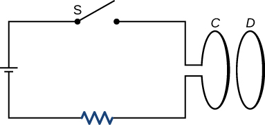
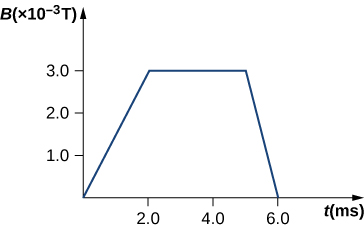
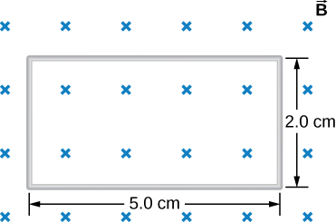
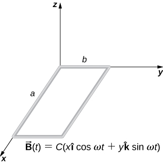

By the end of this section, you will be able to:
The first productive experiments concerning the effects of time-varying magnetic fields were performed by Michael Faraday in 1831. One of his early experiments is represented in [link]. An emf is induced when the magnetic field in the coil is changed by pushing a bar magnet into or out of the coil. Emfs of opposite signs are produced by motion in opposite directions, and the directions of emfs are also reversed by reversing poles. The same results are produced if the coil is moved rather than the magnet—it is the relative motion that is important. The faster the motion, the greater the emf, and there is no emf when the magnet is stationary relative to the coil.
Faraday also discovered that a similar effect can be produced using two circuits—a changing current in one circuit induces a current in a second, nearby circuit. For example, when the switch is closed in circuit 1 of [link](a), the ammeter needle of circuit 2 momentarily deflects, indicating that a short-lived current surge has been induced in that circuit. The ammeter needle quickly returns to its original position, where it remains. However, if the switch of circuit 1 is now suddenly opened, another short-lived current surge in the direction opposite from before is observed in circuit 2.
Faraday realized that in both experiments, a current flowed in the circuit containing the ammeter only when the magnetic field in the region occupied by that circuit was changing. As the magnet of the figure was moved, the strength of its magnetic field at the loop changed; and when the current in circuit 1 was turned on or off, the strength of its magnetic field at circuit 2 changed. Faraday was eventually able to interpret these and all other experiments involving magnetic fields that vary with time in terms of the following law:
The emf induced is the negative change in the magnetic flux per unit time. Any change in the magnetic field or change in orientation of the area of the coil with respect to the magnetic field induces a voltage (emf).
The magnetic flux is a measurement of the amount of magnetic field lines through a given surface area, as seen in [link]. This definition is similar to the electric flux studied earlier. This means that if we have
then the induced emf or the voltage generated by a conductor or coil moving in a magnetic field is
The negative sign describes the direction in which the induced emf drives current around a circuit. However, that direction is most easily determined with a rule known as Lenz’s law, which we will discuss shortly.
Part (a) of [link] depicts a circuit and an arbitrary surface S that it bounds. Notice that S is an open surface. It can be shown that any open surface bounded by the circuit in question can be used to evaluate For example, is the same for the various surfaces of part (b) of the figure.
The SI unit for magnetic flux is the weber (Wb),
Occasionally, the magnetic field unit is expressed as webers per square meter () instead of teslas, based on this definition. In many practical applications, the circuit of interest consists of a number N of tightly wound turns (see [link]). Each turn experiences the same magnetic flux. Therefore, the net magnetic flux through the circuits is N times the flux through one turn, and Faraday’s law is written as
A Square Coil in a Changing Magnetic Field The square coil of [link] has sides long and is tightly wound with turns of wire. The resistance of the coil is The coil is placed in a spatially uniform magnetic field that is directed perpendicular to the face of the coil and whose magnitude is decreasing at a rate (a) What is the magnitude of the emf induced in the coil? (b) What is the magnitude of the current circulating through the coil?
Strategy The area vector, or direction, is perpendicular to area covering the loop. We will choose this to be pointing downward so that is parallel to and that the flux turns into multiplication of magnetic field times area. The area of the loop is not changing in time, so it can be factored out of the time derivative, leaving the magnetic field as the only quantity varying in time. Lastly, we can apply Ohm’s law once we know the induced emf to find the current in the loop.
Solution
Significance If the area of the loop were changing in time, we would not be able to pull it out of the time derivative. Since the loop is a closed path, the result of this current would be a small amount of heating of the wires until the magnetic field stops changing. This may increase the area of the loop slightly as the wires are heated.
Check Your Understanding A closely wound coil has a radius of 4.0 cm, 50 turns, and a total resistance of . At what rate must a magnetic field perpendicular to the face of the coil change in order to produce Joule heating in the coil at a rate of 2.0 mW?
1.1 T/s
A stationary coil is in a magnetic field that is changing with time. Does the emf induced in the coil depend on the actual values of the magnetic field?
The emf depends on the rate of change of the magnetic field.
In Faraday’s experiments, what would be the advantage of using coils with many turns?
A copper ring and a wooden ring of the same dimensions are placed in magnetic fields so that there is the same change in magnetic flux through them. Compare the induced electric fields and currents in the rings.
Both have the same induced electric fields; however, the copper ring has a much higher induced emf because it conducts electricity better than the wooden ring.
Discuss the factors determining the induced emf in a closed loop of wire.
(a) Does the induced emf in a circuit depend on the resistance of the circuit? (b) Does the induced current depend on the resistance of the circuit?
a. no; b. yes
How would changing the radius of loop D shown below affect its emf, assuming C and D are much closer together compared to their radii?
Can there be an induced emf in a circuit at an instant when the magnetic flux through the circuit is zero?
As long as the magnetic flux is changing from positive to negative or negative to positive, there could be an induced emf.
Does the induced emf always act to decrease the magnetic flux through a circuit?
How would you position a flat loop of wire in a changing magnetic field so that there is no induced emf in the loop?
Position the loop so that the field lines run perpendicular to the area vector or parallel to the surface.
The normal to the plane of a single-turn conducting loop is directed at an angle to a spatially uniform magnetic field It has a fixed area and orientation relative to the magnetic field. Show that the emf induced in the loop is given by where A is the area of the loop.
A 50-turn coil has a diameter of 15 cm. The coil is placed in a spatially uniform magnetic field of magnitude 0.50 T so that the face of the coil and the magnetic field are perpendicular. Find the magnitude of the emf induced in the coil if the magnetic field is reduced to zero uniformly in (a) 0.10 s, (b) 1.0 s, and (c) 60 s.
Repeat your calculations of the preceding problem’s time of 0.1 s with the plane of the coil making an angle of (a) (b) and (c) with the magnetic field.
a. 3.8 V; b. 2.2 V; c. 0 V
A square loop whose sides are 6.0-cm long is made with copper wire of radius 1.0 mm. If a magnetic field perpendicular to the loop is changing at a rate of 5.0 mT/s, what is the current in the loop?
The magnetic field through a circular loop of radius 10.0 cm varies with time as shown below. The field is perpendicular to the loop. Plot the magnitude of the induced emf in the loop as a function of time.

The accompanying figure shows a single-turn rectangular coil that has a resistance of The magnetic field at all points inside the coil varies according to where and What is the current induced in the coil at (a) , (b) 0.002 s, (c) 2.0 s?
How would the answers to the preceding problem change if the coil consisted of 20 closely spaced turns?
Each answer is 20 times the previously given answers.
A long solenoid with turns per centimeter has a cross-sectional area of and carries a current of 0.25 A. A coil with five turns encircles the solenoid. When the current through the solenoid is turned off, it decreases to zero in 0.050 s. What is the average emf induced in the coil?
A rectangular wire loop with length a and width b lies in the xy-plane, as shown below. Within the loop there is a time-dependent magnetic field given by , with in tesla. Determine the emf induced in the loop as a function of time.
The magnetic field perpendicular to a single wire loop of diameter 10.0 cm decreases from 0.50 T to zero. The wire is made of copper and has a diameter of 2.0 mm and length 1.0 cm. How much charge moves through the wire while the field is changing?